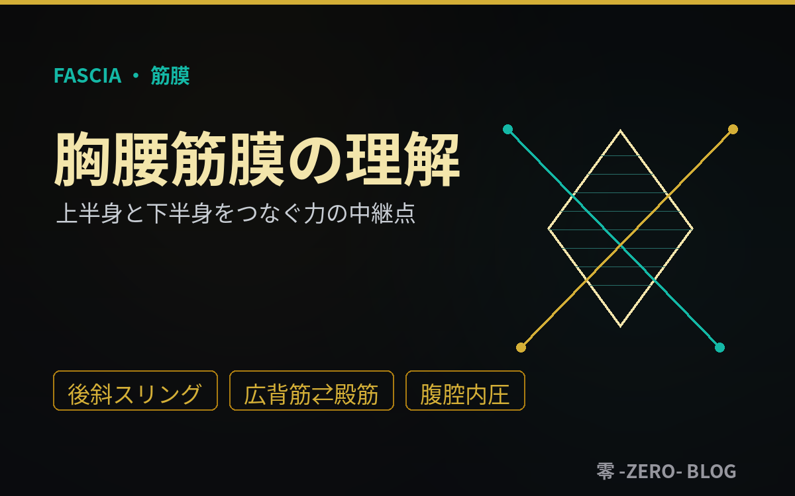
筋膜・胸腰筋膜
2026.07.02
胸腰筋膜の理解 ― 上半身と下半身をつなぐ"力の中継点"
腰の背面に広がる胸腰筋膜（TLF）は、上半身と下半身、左右、深層と表層をつなぐ力の中継点であり、痛みと感覚の器官でもある。層構造、後斜スリング（広背筋⇄大殿筋）、腹腔内圧との連結、機能不全が招く腰痛までを、トレーナー・セラピスト向けに解説。
「足す前に戻る」「身体は本来完成している」。構造・神経・流れの三層から、身体の真実に迫る公式ブログ。

腰の背面に広がる胸腰筋膜（TLF）は、上半身と下半身、左右、深層と表層をつなぐ力の中継点であり、痛みと感覚の器官でもある。層構造、後斜スリング（広背筋⇄大殿筋）、腹腔内圧との連結、機能不全が招く腰痛までを、トレーナー・セラピスト向けに解説。
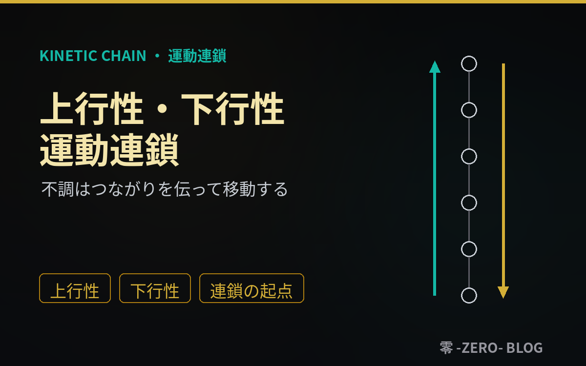
身体はつながったシステム。ズレは一カ所にとどまらず、下から上へ（上行性）、上から下へ（下行性）と連鎖的に伝播する。それぞれの定義と代表例、なぜ連鎖するのか、崩れる原因と影響までを、トレーナー・セラピスト向けに解説。「連鎖の起点」を探す視点を養う一本。
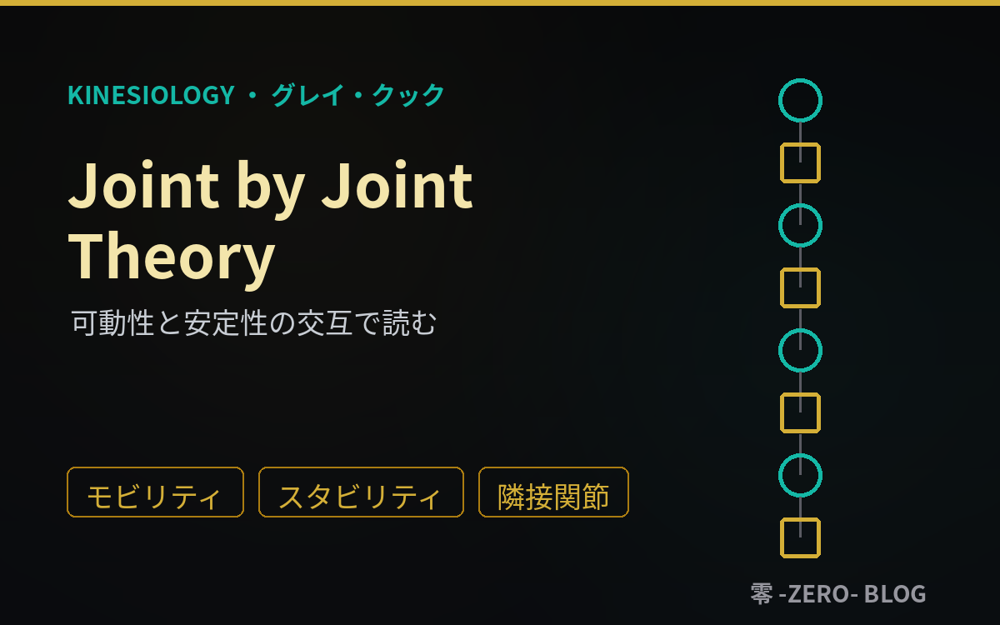
グレイ・クックとマイク・ボイルが提唱した理論。関節は可動性担当と安定性担当が交互に積み重なり、役割が崩れると負担は隣へ飛ぶ。各関節の役割、隣接関節仮説、崩れる原因と影響までを、トレーナー・セラピスト向けに解説。「痛む場所」から視野を広げる一本。
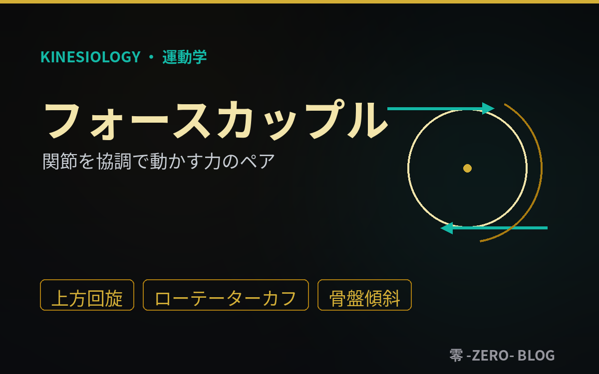
動きは1つの筋ではなく、異なる方向に働く複数の力のバランスで生まれる。定義と仕組み、代表例（肩甲骨上方回旋・ローテーターカフ・骨盤傾斜）、崩れる原因と影響までを、トレーナー・セラピスト向けに解説。「弱い筋」だけでなく「引き勝つ筋」まで見るための一本。
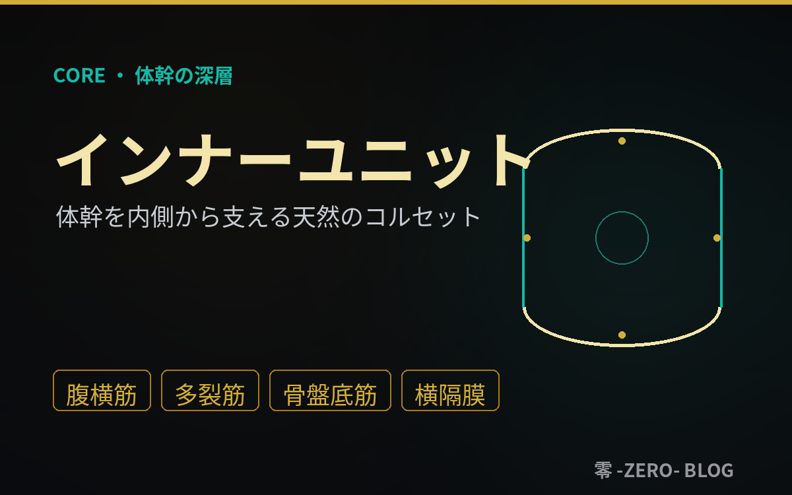
横隔膜・腹横筋・多裂筋・骨盤底筋がつくる体幹の深層システム。その構成と重要性（フィードフォワード制御）、働かない人の特徴、アウターユニットとの違いまでを、トレーナー・セラピスト向けに解説。鍛える前に"働いているか"を問い直すための一本。
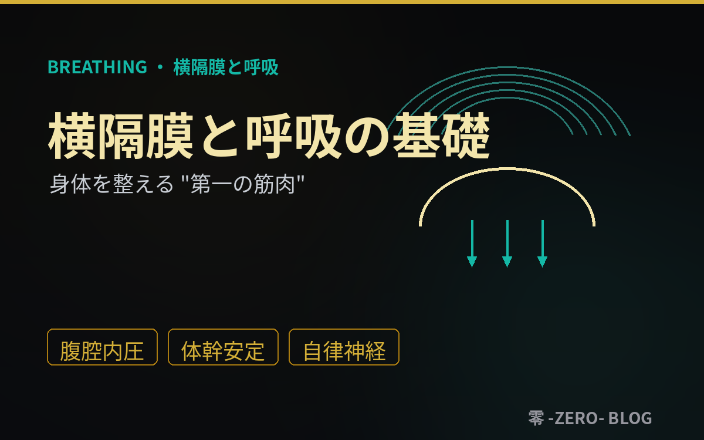
横隔膜は単なる呼吸の筋肉ではなく、体幹安定（腹腔内圧）と自律神経への唯一の随意の入口を兼ねる結節点だ。解剖、呼吸の仕組み、インナーユニット、機能低下の連鎖、そして現場で押さえたい基本原則までを、トレーナー・セラピスト向けに解説。
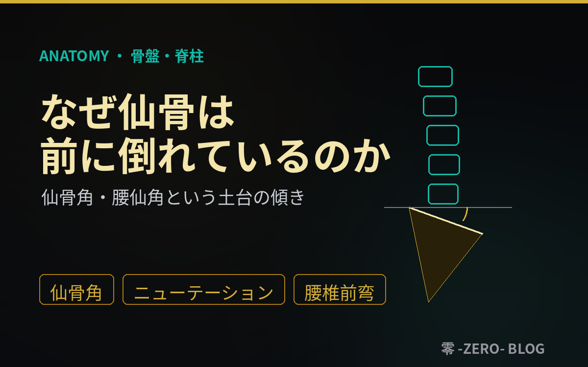
仙骨底が約30°前傾しているのは異常ではなく、直立し、衝撃を吸収し、荷重を仙腸関節へ安定して伝えるための設計だ。仙骨角・腰仙角の意味、ニューテーション、骨盤前後傾との連動、そして角度の破綻が腰部〜全身に及ぼす影響を、トレーナー・セラピスト向けに解説。
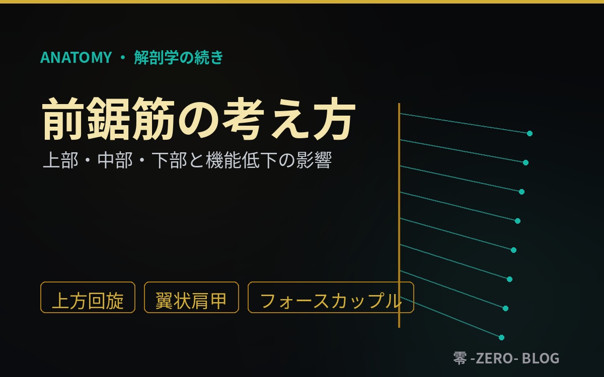
肩甲骨を胸郭につなぎとめ、上肢挙上を支える前鋸筋。上部・中部・下部の線維ごとの役割、上方回旋のフォースカップル、そして機能低下が引き起こす翼状肩甲・肩インピンジメント・頸肩部の代償までを、評価とエクササイズ選択に直結する形で解説。
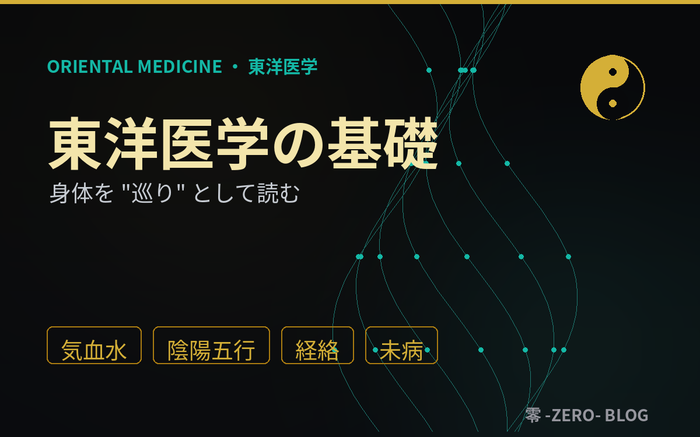
部分を分けて見る西洋に対し、東洋は全体の関係性と巡りで身体を読む。気血水、陰陽五行、経絡経穴、四診、未病という基本概念を、現代医学と対比しながら、トレーナー・セラピスト・国家資格者が"もう一つの評価レンズ"として臨床に組み込めるよう解説。

筋緊張も可動域も痛みも、最終決定を下しているのは神経系だ。中枢〜末梢の構成、運動制御、感覚入力、自律神経、痛みの神経科学、神経可塑性まで。トレーナー・セラピスト・国家資格者が評価とアプローチに直結させるための基礎を解説。
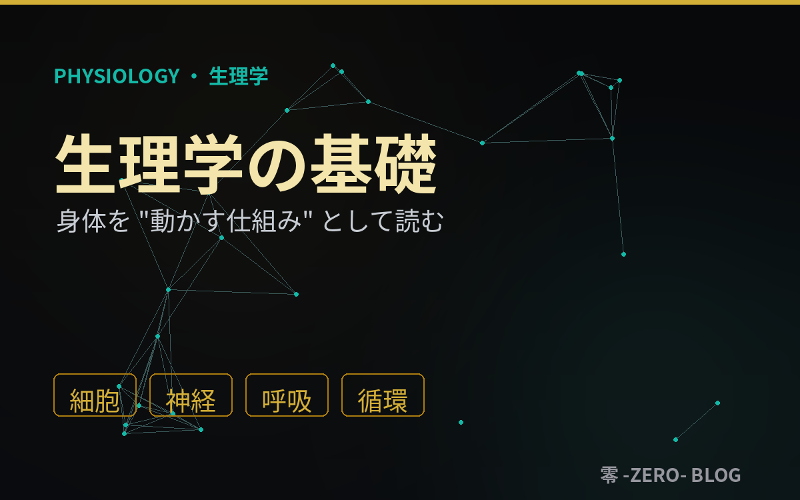
解剖学が身体の「地図」なら、生理学はその上で起きる電気と流れの仕組みだ。細胞とエネルギー、神経と自律神経、呼吸と循環――身体が本来どう働くようにできているのかを、臨床に活かせる形でわかりやすく解説。
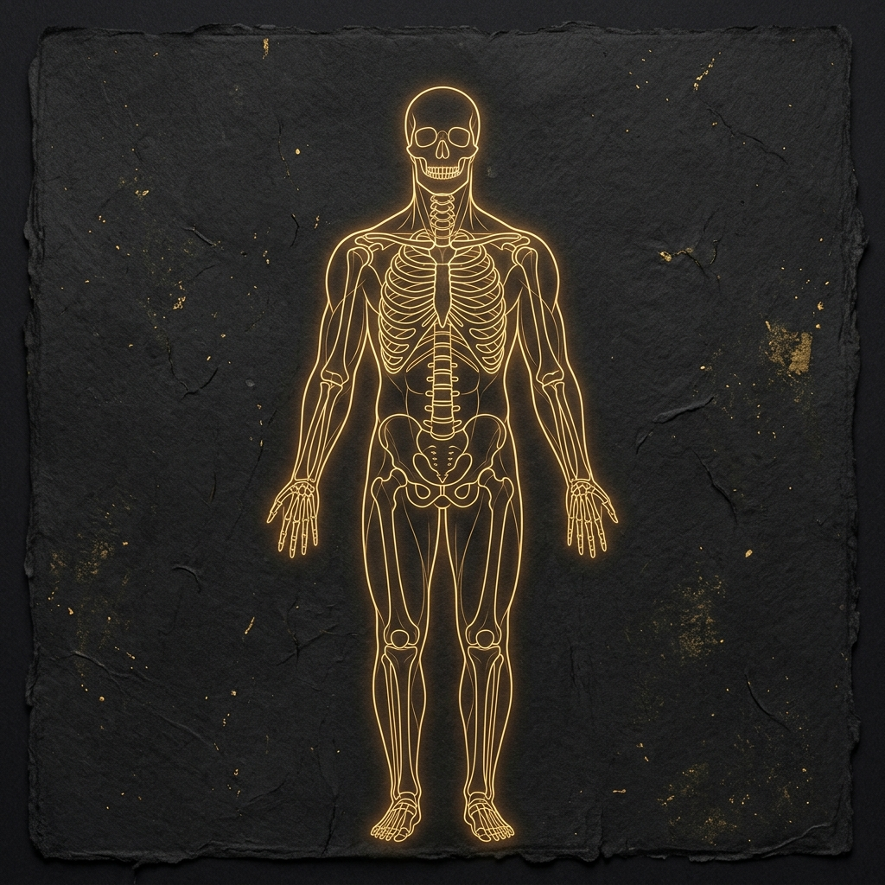
「解剖学」と聞くと、骨や筋肉の名前を暗記する退屈な勉強――そんなイメージを持つ人は多い。でも本来の解剖学は、身体という地図の読み方を学ぶことだ。痛みやコリの原因を見極め、臨床に活かすための基礎知識をわかりやすく解説。
「構造・神経・流れ」の知恵をさらに深め、現場で圧倒的な結果を出すためのプロフェッショナル向け有料コミュニティ。オンライン症例検討会や定期セミナーへの参加権利とともに、現場で即座に活きる実践的な知識や考え方を学ぶ場所です。